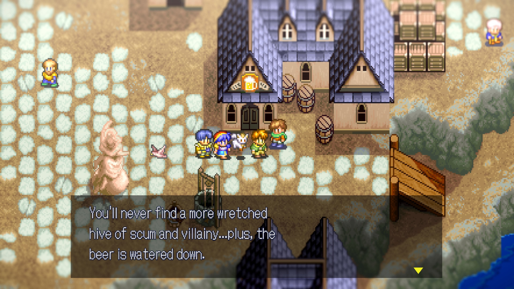
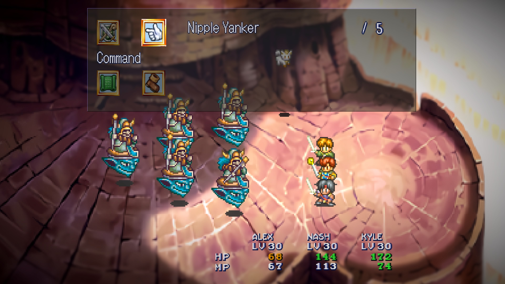

1game1week - Week 45 (11/5/25) - Lunar: Silver Star Story (via Lunar Remastered Collection)
Hey all! It's week 45! (11/5 -> 11/12)
Almost there... just seven more weeks. I don't have any games in post queue so I really have to hustle and get working on what to play for week 46. I've had a hard time deciding...
I'll probably play Lollipop Chainsaw. It's fairly short, so hopefully I can beat it in a couple days and give myself time to play something slightly longer.
We'll see how I do. I'd be really disappointed in myself if I wasn't able to finish out the challenge, when I'm so close.
I made some changes to the website! I'd love some feedback, if there is any.
Anyways!
New games from 10/29 -> 11/4:
None! (Total 17)
Currently, my backlog is at +7 (lower is better, -1 from last week).
And onto 1g1w. Once again, a game is considered "beaten" if I've accomplished the main objective of the game.
GAME: Lunar: Silver Star Story (via Lunar Remastered Collection)
PLATFORM: PS4 (played on PS5)
GENRE: RPG
STARTED ON: 10/25
BEATEN ON: 11/1
TOTAL PLAYTIME: 13 hours and 50 minutes (in-game time) / 16 hours and 49 minutes (PS-Timetracker)
This week, I played the remastered version of Lunar that came out earlier this year. I was thankfully able to pick up the PS4 version after waking up at 5AM the day they allowed orders (by chance).
Looking back, it was a bit of a mess. No preorders allowed, because there would reportedly be "plenty of stock available", only for it to go out of stock in the US within a few hours. Thankfully, it's really easy to find nowadays on Amazon, but the overconfidence was really funny. I mean, that's what preorders are for! You're able to gauge how many copies to produce and all your buyers are (in theory) guaranteed a copy!
When it released, I remember the Pricecharting prices being somewhere around $80 for the PS4 version. Scalpers being able to make money off of it, simply because of GungHo's overconfidence in saying "we'll have plenty of stock, so no need for preorders" was stupid. Incredibly stupid.
All of this is not necessarily tied to the game itself, but I think it's a part of its story. Thankfully it all ended up okay in the end.
But that's enough of that! Let's get to gaming.
Lunar's really well regarded as one of those JRPGs that were huge for the time. Playing this in 2025, one may ask themselves: what's so special about Lunar? Lots of games play similar to this, especially playing the remastered version. When it released, Lunar just so happened to be the first to do it. Not just that, but it was one of the first JRPGs to have anime cutscenes and extensive voice acting.
I, you know, wasn't alive through this, so it was really tough to put myself in the "correct" historical context/mindset to really be wowed by it. That's not to say I wasn't, though!
The Remastered version is using the same localization as the old releases, which were done by Working Designs in the late '90s. While it's completely workable as a localization, sometimes it's just... a little cringy. There's various references to pop culture (like Star Wars), and various other random mentions of things characters might just not really know about.
I'd give a pass to something like Karaoke, or a Snooze Button, I guess... They just didn't really feel right for the characters to mention them, given the setting. Maybe I'm just a little crazy. It feels like what a 4Kids dub would be like.

I've heard a few choice words that are not perceived in the kindest light that were used by Working Designs were removed, as well as slightly-lewd-ish jokes.
Something to note is that Lunar features dual language support, so you can have both English text and Japanese voices. I'm not the biggest fan of English dubs, so Japanese voices were a blessing. They seem to be the same ones as the originals as well, whereas the English voices were re-recorded for the Remastered version.
The battle system wasn't changed, other than allowing for a shared party inventory (if what I read was correct) and allowing for a speed-up function. Since the game is turn-based, this was awesome, and knocked down both grinding and game length considerably. It essentially just made animations faster, which is very welcome as they'd just be the same animations for the entire game. Time stacks up, I fear.
I liked the combat. It really wasn't tough, but it did get a tiny bit repetitive: especially with bosses towards the later part of the game.
More often than not, I'd find having Alex and Kyle use buff skills twice, and then just keeping them alive while using almost every other character as support for them was the winning move. Maybe this falls on my creativity a bit, but to me it felt like the other characters' toolkits really weren't the biggest threats to enemies.
Something really cool was level scaling. Essentially, you're facing down one big enemy with a health stat that is a function of your main character's level. For example, if my level is 10 and the boss's health function is LVL * 69, then the boss's health is 690. If my level was 11, then health would be 759, and so on.
A very annoying thing was unfortunately the flee mechanic. If you try to run from a battle, it's RNG whether or not you're able to do so with your entire party. It also completely takes up your party's turn. I understand the game is just encouraging me to fight instead, but... come on.
Also, the game had a slightly annoying tendency to change your party on a whim. I suppose it's more so to make you experiment with all your party members and test adaptation. It just seemed silly to take away my healers for a while.

Outside from that: the game was beautiful to look at, with the pixel art looking as beautiful here as it did in the original. One minor gripe is that the remastered collection does not have an even pixel scale. The game internally and incorrectly scales the image before sending it to the console for output, which results in some pixels being more wide than others and shimmering.
Even using a scaler, like the RetroTINK, you're not really able to fix it. It's really disappointing that pixel-style is not really respected as an artform, even more so when this is a collection of retro games.
Still, Lunar is a great game. It has held up fantastically, and barring very minor annoyances in the script and the uneven pixel scaling, works as a phenomenal look back at one of the big greats of JRPGs.
One last thing... I felt really silly, but at the very beginning when Nall calls for Alex while at the Dragonmaster's monument, I had a brainfart moment. I was thinking, "Did... Did I enter my name somewhere?"

Thanks for reading! If you need to contact me for any reason, please feel free to email me at aru@hoshikawa-aru.com.